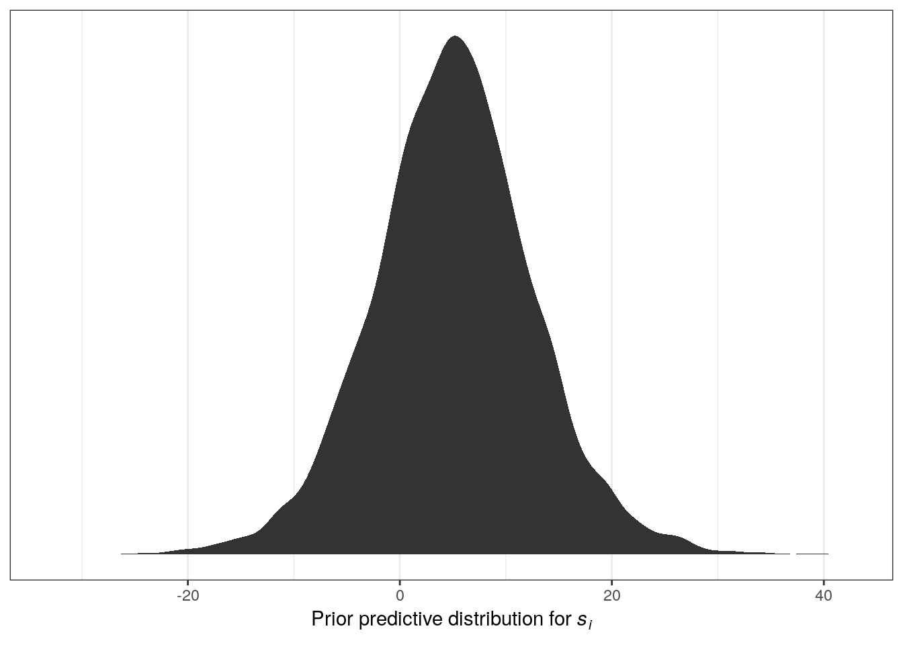
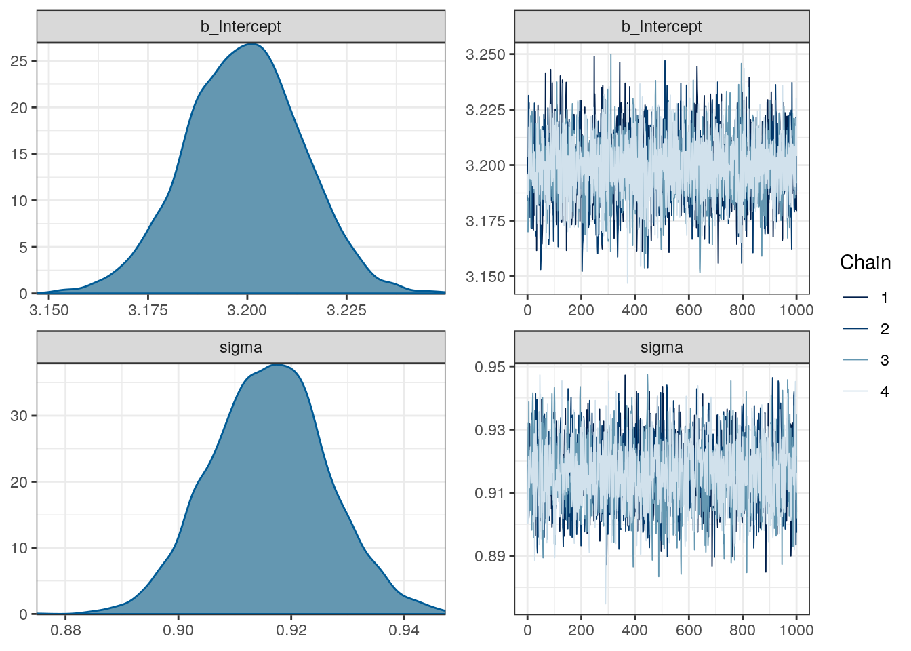
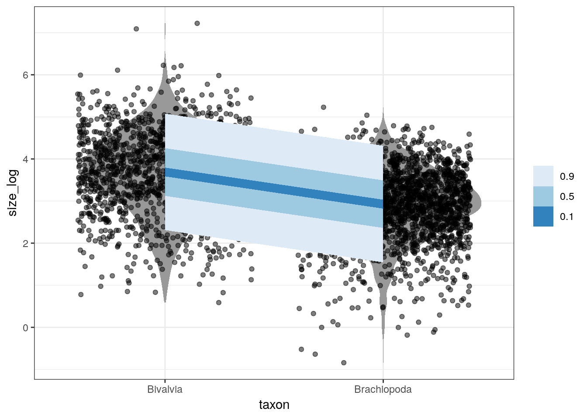

3 Introduction to linear regression
3.1 Objectives
- Set up a linear regression model.
- Interpret the parameters of a regression model.
- Communicate a model descriptions to others.
- Fit regression models in brms.
- Basics of summarizing and visualizing a model fit.
library(pacman)
p_load(tidyverse, modelr, brms, tidybayes, here)
theme_set(theme_bw())3.2 Reading
The following materials are recommended pre-readings before starting this tutorial.
- Chapter 4 “Linear Models” from Statistical Rethinking by Richard McElreath.
- OPTIONAL Chapter 3 “Sampling the Imaginary” from Statistical Rethinking by Richard McElreath.
- OPTIONAL Chapter 3 “Linear regression: the basics” from Data Analysis Using Regression and Multilevel/Hierarchical Models by Gelman and Hill.
3.3 Linear regression
Linear regression refers to a large family of statistical models which attempt to learn about the mean and variance of some measurement, using an additive combination of other measures. Linear regression is a descriptive model that corresponds to many different processes.
Normally regression is presented as a way of representing the relationship between two or more variables. I believe this description obscures the interpretation and meaning of regression results. Instead, we’re going to think of linear regression as a method that summarizes how the average or expected values of a numerical outcome vary as a linear functions of one or more predictors.
Regression can be used to predict an outcome given a linear function of those predictors, and regression coefficients can be thought of as comparisons across predicted values or as comparisons among averages in the data. A regression coefficient describes the expected change in the response per unit change in its predictor. Linear regression uses a Gaussian/Normal distribution to describe the distribution of our measurement of interest. Like any model, linear regression is not universally applicable. But linear regression is pretty foundational in statistics because once you can build and interpret a linear regression model, it is easy to move on to other types of regression for when things aren’t Normal.
Models of normally distributed data are very common: t-test, single regression, multiple regression, ANOVA, ANCOVA, MANOVA, MANCOVA, etc. All of these models are functionally equivalent. Learning and understanding each of these special cases is a lot of unnecessary work; instead, we’re going to focus on a general modeling strategy that subsumes all of these special cases as just variations on a theme. Additionally, we’re going to cover a statistical notation for communicating a model that encodes all of our assumptions and presents them clearly for other readers (including yourself in the future).
3.3.1 Talking about models
Here are the choices encoded in a model description:
- Outcome variable or variables that we hope to predict or understand (\(y\)).
- Likelihood distribution that defines the plausibility of the individual observations.
- Predictors or covariates – a set of other measurements that we hope to use to predict or understand the outcome (\(X\)).
- Relation between the shape of the likelihood distribution (e.g. location and scale) to the predictor variables. The nature of this relation forces us to define all the parameters of the model.
- Priors for all of the parameters in the model.
Here’s the globe tossing model from last week \[ \begin{align} w &\sim \text{Binomial}(n, p) \\ p &\sim \text{Uniform}(0, 1). \\ \end{align} \] The \(\sim\) symbol indicates a stochastic relationship. A stochastic relationship means that the variable or parameter is mapped onto a distribution of values. It is stochastic because no single instance of the variable on the left is known with certainty. This relationship is probabilistic as some values are more plausible than others, though there are many plausible values under any model.
Can you identify the various parts of this model description?
This notation allows us to specify and communicate our model clearly so that other people can understand what we’re doing. This language is general, and can be used to describe all model types. It is ok if you do not immediately understand this notation; that’s a normal part of learning. By continuing to use this notation, we will build familiarity with this syntax.
3.3.2 Growing a regression model
We’re going to use a real dataset of invertebrate valve sizes and slowly build up a regression model to describe differences between taxonomic groups. We will begin with a proto-regression model and then add predictors.
The dataset we’re going to have fun with as part of today’s activities is the Bivalve and Brachiopod body size data from Payne et al. 2014 ProcB. Their data includes location, age, type, and valve length. Load the “occurrence” tab-delimited file and start exploring the distribution of body sizes.
# `here` allows us to grab from subdirectory without formally specifying path
# allows portability
r <- read_tsv(here('data', 'payne_bodysize', 'Occurrence_PaleoDB.txt')) ## Parsed with column specification:
## cols(
## taxon_name = col_character(),
## pbdb_collection_no = col_double(),
## p_lat = col_double(),
## p_lng = col_double(),
## int_midpoint = col_double(),
## taxon = col_character(),
## sub = col_character(),
## size = col_double()
## )# modify raw data for use
# genus can occur 1+ times
(d <- r %>%
group_by(taxon_name, taxon) %>%
dplyr::summarize(size = mean(size)) %>% # is this always a good idea?
mutate(size_log = log(size)) %>% # log transform
ungroup())## # A tibble: 3,980 x 4
## taxon_name taxon size size_log
## <chr> <chr> <dbl> <dbl>
## 1 Abra Biv 38 3.64
## 2 Abrekia Bra 11.6 2.45
## 3 Abruptolopha Biv 98.8 4.59
## 4 Acambona Bra 39.9 3.69
## 5 Acanthalosia Bra 37.5 3.62
## 6 Acanthambonia Bra 1.74 0.556
## 7 Acanthatia Bra 23.5 3.16
## 8 Acanthocardia Biv 102. 4.63
## 9 Acanthocosta Bra 24.5 3.20
## 10 Acanthopecten Biv 12.1 2.50
## # … with 3,970 more rows# look at the data
d %>%
gather(key, value, size, size_log) %>%
ggplot(aes(x = value)) +
stat_bin() +
facet_wrap(~ key, scales = 'free_x', switch = 'x') +
labs(x = 'valve length')## Warning: 'switch' is deprecated.
## Use 'strip.position' instead.
## See help("Deprecated")## `stat_bin()` using `bins = 30`. Pick better value with `binwidth`.Linear regression uses a Gaussian distribution to describe a continuous variable of interest. The Gaussian distribution at the center of linear regression has two parameters describing the shape of the distribution – mean \(\mu\) and standard deviation \(\sigma\). Here’s a quick picture of a Gaussian distribution, play around with the mean and standard deviation parameters.
ggplot(data = tibble(x = seq(from = -25, to = 25, by = 0.1)),
aes(x = x, y = dnorm(x, mean = 5, sd = 1000))) +
geom_line() +
scale_y_continuous(NULL, breaks = NULL)The way Bayesian updating works means we want to consider all possible combinations of \(\mu\) and \(\sigma\) and rank them by posterior plausibility. The posterior is in effect a distribution of plausible Gaussian distributions.
To define the log valve length as Gaussian distributed with mean \(\mu\) and standard deviation \(\sigma\), we write \[ s_{i} \sim \text{Normal}(\mu, \sigma). \]
What do the different terms and symbols in this statement mean?
To complete this model we need to define the priors for the parameters \(\mu\) and \(\sigma\). We need a joint prior \(Pr(\mu, \sigma)\), but most of the time we can just define independent priors for each parameter – this is equivalent to saying \(Pr(\mu, \sigma) = Pr(\mu)Pr(\sigma)\). Here’s a more complete look at the Gaussian model of log valve length: \[ \begin{align} s_{i} &\sim \text{Normal}(\mu, \sigma) \\ \mu &\sim \text{Normal}(3, 10) \\ \sigma &\sim \text{Uniform}(0, 20) \\ \end{align} \] What do each of these three lines mean?
Let’s discuss the choice of priors for \(\mu\) and \(\sigma\). It is a good idea to plot your priors so that you can better understand your assumptions.
# prior for mean of log valve length
ggplot(data = tibble(x = seq(from = -50, to = 50, by = .1)),
aes(x = x, y = dnorm(x, mean = 3, sd = 10))) +
geom_line() +
scale_y_continuous(NULL, breaks = NULL) +
labs(x = expression(mu))# prior for standard deviation of log valve length
ggplot(data = tibble(x = seq(from = 0, to = 30, by = .1)),
aes(x = x, y = dunif(x, min = 0, max = 20))) +
geom_line() +
scale_y_continuous(NULL, breaks = NULL) +
labs(x = expression(sigma))But what do these distributions mean for the distribution of log valve lengths? These individual priors imply the full distribution of lengths, so let’s simulate them together and plot those results:
n <- 1e4 # number of samples
tibble(sample_mu = rnorm(n, mean = 5, sd = 5),
sample_sigma = runif(n, min = 0, max = 10)) %>%
mutate(x = rnorm(n, mean = sample_mu, sd = sample_sigma)) %>% # joint distribution
ggplot(aes(x = x)) +
stat_density() +
scale_y_continuous(NULL, breaks = NULL) +
labs(x = expression(paste("Prior predictive distribution for ", italic(s[i]))))
The resulting distribution describes the relative prior plausibilities we’ve defined for log valve lengths. Play around with the numbers in the priors and see its effect on the prior probability density of log valve lengths.
3.3.3 Sampling from the model
Now that we’ve completely defined out model (likelihood, data to condition on, parameters, and priors for all parameters) we can estimate the posterior plausibilities of our parameter values.
We’re going to use the brms package to fit our model. This package was briefly introduced at the end of last lesson, and we’re going to get more experience with it today. After we fit the model, we’ll use functions from tidybayes that will help us extract and visualize our posterior distribution.
m_1 <- brm(data = d,
family = gaussian(),
formula = bf(size_log ~ 1),
prior = c(prior(normal(3, 10), class = Intercept),
prior(uniform(0, 20), class = sigma)),
iter = 2000, # default
warmup = 1000, # 1/2 iter
chains = 4, # each chain is a set of samples
cores = 4, # parallel processing; this might not work on your computer
refresh = 0) # less text output# what does the brm object look like?
print(m_1)## Family: gaussian
## Links: mu = identity; sigma = identity
## Formula: size_log ~ 1
## Data: d (Number of observations: 3980)
## Samples: 4 chains, each with iter = 2000; warmup = 1000; thin = 1;
## total post-warmup samples = 4000
##
## Population-Level Effects:
## Estimate Est.Error l-95% CI u-95% CI Eff.Sample Rhat
## Intercept 3.20 0.01 3.17 3.23 2991 1.00
##
## Family Specific Parameters:
## Estimate Est.Error l-95% CI u-95% CI Eff.Sample Rhat
## sigma 0.92 0.01 0.90 0.94 3196 1.00
##
## Samples were drawn using sampling(NUTS). For each parameter, Eff.Sample
## is a crude measure of effective sample size, and Rhat is the potential
## scale reduction factor on split chains (at convergence, Rhat = 1).# what do the estimates and chains look like?
plot(m_1)
# what are the parameter named?
get_variables(m_1)## [1] "b_Intercept" "sigma" "lp__" "accept_stat__"
## [5] "stepsize__" "treedepth__" "n_leapfrog__" "divergent__"
## [9] "energy__"# extract the samples
m_1 %>%
spread_draws(b_Intercept, sigma)## # A tibble: 4,000 x 5
## .chain .iteration .draw b_Intercept sigma
## <int> <int> <int> <dbl> <dbl>
## 1 1 1 1 3.20 0.919
## 2 1 2 2 3.20 0.913
## 3 1 3 3 3.19 0.919
## 4 1 4 4 3.19 0.931
## 5 1 5 5 3.21 0.903
## 6 1 6 6 3.21 0.907
## 7 1 7 7 3.21 0.916
## 8 1 8 8 3.20 0.932
## 9 1 9 9 3.21 0.910
## 10 1 10 10 3.21 0.909
## # … with 3,990 more rowsWe now have 4000 samples from the joint posterior. How do we want to summarize them? Here are some examples:
# median and 95% quantile interval
m_1 %>%
gather_draws(b_Intercept, sigma) %>%
median_qi() # ?brms::point_interval for documentation## # A tibble: 2 x 7
## .variable .value .lower .upper .width .point .interval
## <chr> <dbl> <dbl> <dbl> <dbl> <chr> <chr>
## 1 b_Intercept 3.20 3.17 3.23 0.95 median qi
## 2 sigma 0.916 0.896 0.936 0.95 median qi# posterior predictive distribution
m_1 %>%
add_predicted_draws(newdata = d, # original data gives to simulate from
model = ., # the model we want the PPD from
n = 100) %>% # how many draws from PPD per observation
ggplot(aes(x = .prediction, group = .draw)) +
geom_line(stat = 'density',
alpha = 0.1,
colour = 'blue') +
geom_line(stat = 'density',
data = d, # compare to original data distribution
mapping = aes(x = size_log,
group = NULL),
colour = 'black',
size = 1.5) +
scale_y_continuous(NULL, breaks = NULL) +
labs(x = 'log valve length')We will be discussing the posterior predictive distribution further later in the lesson. For now, think of this as the distribution of outcomes implied by our model – the distribution of plausible distributions.
3.4 Adding a predictor to the mix
Currently, our model doesn’t really resemble what we think of as “regression.” Typically, we want to understand how the mean of our outcome variable is related to one or more predictor variables.
Let’s start with a basic analysis questions: do Bivalves and Brachiopods differ in valve length and how? Start by looking at the data.
d %>%
mutate(taxon = recode(taxon,
Biv = 'Bivalvia',
Bra = 'Brachiopoda')) %>% # make text clearer
ggplot(aes(x = taxon, y = size_log)) +
geom_violin(fill = 'grey60', colour = NA) +
geom_jitter(height = 0, alpha = 0.5) +
labs(x = 'taxon', y = 'log valve length')To build a linear model the strategy is to make the parameter for the mean of the Gaussian distribution, \(\mu\), into a linear function of the predictor variable and other, new parameters we invent. A linear model means that we assume that the predictors have a perfectly constant and additive relationship to the mean of the outcome.
Currently, our model looks like this: \[ \begin{align} s_{i} &\sim \text{Normal}(\mu, \sigma) \\ \mu &\sim \text{Normal}(3, 10) \\ \sigma &\sim \text{Uniform}(0, 20) \\ \end{align} \]
How do we add “Bivalve vs Brachiopod” to our model of valve size?
First, let the mathematical name of the column “taxon” from the tibble d be called \(x\). This variable \(x\) is a predictor variable that can take one of two values: 0 for Biv(alve), and 1 for Bra(chiopod). Additionally, this vector has the same length as \(s\). How do we then express how \(x\) describes or predicts the values of \(s\)?
To get taxonomic group into the model, we need to define \(\mu\) as a function of the values in \(x\). Here’s how we could do this: \[ \begin{align} s_{i} &\sim \text{Normal}(\mu_{i}, \sigma) \\ \mu_{i} &= \alpha + \beta x_{i}\\ \alpha &\sim \text{Normal}(3, 10) \\ \beta &\sim \text{Normal}(0, 10) \\ \sigma &\sim \text{Uniform}(0, 20) \\ \end{align} \] What do each of the lines in the model represent? What has changed and why?
But where did \(\alpha\) and \(\beta\) come from? We made them up! \(\mu\) and \(\sigma\) are necessary and sufficient for describing the Gaussian distribution. \(\alpha\) and \(\beta\) are devices we invent for manipulating \(\mu\), allowing it vary across cases in our data.
Making up new parameters like \(\alpha\) and \(\beta\) is a common strategy for expanding the amount of information in our model. These parameters are targets of our learning – each must be described in the posterior density. When we want to learn something, we invent a parameter (or parameters) describing it.
In the case of the linear model, \(\mu_{i} = \alpha + \beta x_{i}\), we are now asking two questions about the mean of \(s\) instead of just one.
- What is the expected log valve length when \(x_{i} = 0\) (e.g. species is a Bivalve)? The parameter \(\alpha\) answers this question. For this reason, \(\alpha\) is called the intercept.
- What is the change in expected log valve length, when \(x_{i}\) changes by 1 unit? The parameter \(\beta\) answers this questions, and is often called a slope.
These two parameters along with \(x\) describe a line that passes through \(\alpha\) when \(x_{i} = 0\) and has slope \(\beta\).
Remember that \(x\) is a binary vector – it only takes on one of two values: 0 or 1. For a binary predictor, the regression coefficient is interpreted as the difference between the averages of the two groups.
Let’s think more about this choice of prior. Do you think there is an equal chance that average brachiopod valves are larger or smaller than bivalves? In this context, we have so much data that this is harmless. In other contexts, our sampler might need more information to finds its target.
So let’s fit the model:
m_2 <- brm(data = d,
family = gaussian(),
formula = size_log ~ 1 + taxon,
prior = c(prior(normal(3, 10), class = Intercept),
prior(normal(0, 10), class = b),
prior(uniform(0, 20), class = sigma)),
iter = 2000, # default
warmup = 1000, # 1/2 iter
chains = 4, # each chain is a set of samples
cores = 4, # parallel processing; this might not work on your computer!
refresh = 0) # less text output# look at the brm summary
print(m_2)## Family: gaussian
## Links: mu = identity; sigma = identity
## Formula: size_log ~ 1 + taxon
## Data: d (Number of observations: 3980)
## Samples: 4 chains, each with iter = 2000; warmup = 1000; thin = 1;
## total post-warmup samples = 4000
##
## Population-Level Effects:
## Estimate Est.Error l-95% CI u-95% CI Eff.Sample Rhat
## Intercept 3.69 0.02 3.65 3.74 3739 1.00
## taxonBra -0.77 0.03 -0.82 -0.71 3535 1.00
##
## Family Specific Parameters:
## Estimate Est.Error l-95% CI u-95% CI Eff.Sample Rhat
## sigma 0.84 0.01 0.82 0.86 3978 1.00
##
## Samples were drawn using sampling(NUTS). For each parameter, Eff.Sample
## is a crude measure of effective sample size, and Rhat is the potential
## scale reduction factor on split chains (at convergence, Rhat = 1).# look at the brm plot
plot(m_2)3.4.1 Aside: Dummy coding
brm, and R in general, will automatically translate categorical predictors like our taxon variable into what’s called dummy coding. Here’s an illustration of what that means using the subtype variable “sub” from our raw data:
r %>%
distinct(sub)## # A tibble: 3 x 1
## sub
## <chr>
## 1 Het
## 2 nonHet
## 3 inartr %>%
model_matrix(~ sub) %>% # from modelr
distinct()## # A tibble: 3 x 3
## `(Intercept)` subinart subnonHet
## <dbl> <dbl> <dbl>
## 1 1 0 0
## 2 1 0 1
## 3 1 1 0 r %>%
model_matrix(~ sub)## # A tibble: 164,402 x 3
## `(Intercept)` subinart subnonHet
## <dbl> <dbl> <dbl>
## 1 1 0 0
## 2 1 0 0
## 3 1 0 0
## 4 1 0 0
## 5 1 0 0
## 6 1 0 0
## 7 1 0 0
## 8 1 0 0
## 9 1 0 0
## 10 1 0 0
## # … with 164,392 more rowsOne of the values of the column is designated to be the intercept. In R, the default intercept is the first value of the vector, alphabetically. The other variables are called contrasts or dummy variables – they describe the difference in mean value when compared to the intercept. By adding the intercept and the regression coefficient, you get the estimated mean for that group. If the categorical variable has \(k\) states, then there are \(k - 1\) contrasts or dummy variables.
There are many other strategies for encoding categorical variables, but dummy coding is by far the most common – it helps that it is the R default.
Don’t worry too much about understanding dummy coding yet – just understand that it exists and that we will return to it in a later lesson.
3.5 Interpreting the model fit
There are two broad categories of how we process model fit: tables, and plotting. Tables are fine, but plotting is key. It is easy to feel like you understand a table while still getting it wrong.
Plotting the implications of your estimates will allow you to inquire about several things that are sometimes hard to read from tables:
- Whether or not the model fitting procedure worked correctly.
- The absolute magnitude, rather than merely relative magnitude, or a relationship between outcome and predictor.
- The uncertainty surrounding an average relationship.
- The uncertainty surrounding the implied predictions of the model, as these are distinct from mere parameter uncertainty.
With practice extracting estimates from your model and plotting them, you can ask any question you can think of, for any model.
Let’s start by getting a basic summary of our posterior:
m_2 %>%
gather_draws(b_Intercept, b_taxonBra, sigma) %>%
median_qi()## # A tibble: 3 x 7
## .variable .value .lower .upper .width .point .interval
## <chr> <dbl> <dbl> <dbl> <dbl> <chr> <chr>
## 1 b_Intercept 3.69 3.65 3.74 0.95 median qi
## 2 b_taxonBra -0.766 -0.823 -0.714 0.95 median qi
## 3 sigma 0.840 0.822 0.859 0.95 median qiThe first row corresponds to the model intercept, which we called \(\alpha\). This parameter corresponds to the expected log valve length when \(x = 0\). In the case of this model, this is easily interpreted as the expected log valve length of a Bivalve species.
The second row is the slope term \(\beta\). This parameter describes the expected change in log valve size associated with unit change in \(x\). In this case of this model, this parameter is easier to describe: this is an estimate of the expected difference in log valve length between Bivalves (\(x = 0\)) and Brachiopods (\(x = 1\)). By adding \(\beta\) and \(\alpha\), we get the estimate for Brachiopod expected log valve length.
The third line is the standard deviation term \(\sigma\), which describes the with of the distribution of log valve lengths. A useful trick for interpreting \(\sigma\) is that about 95% of the probability of a Gaussian distribution lies between plus/minus two standard deviations from the mean. In this case, the estimate tells us that 95% of plausible log valve lengths lie within 1.68 log millimeters (\(2\sigma\)) of the mean log valve length.
3.5.1 Linear predictor
Our regression model describes a line with an intercept and a slope. As demonstrated above, this is true even in the case of a binary predictor – even though our predictor can only take one of two values, the formula still describes a line.
The function brms::add_fitted_draws() estimates the expected log valve length from the linear model part of our model. Remember that the linear model describes only the mean log valve length, and not the spread of log valve length. This function is a convenient way to help us visualize this part of our model.
Here’s an illustration of the linear relationship between taxonomic group and log valve size as described by the median estimates for each taxonomic group:
# parameters of the line
d_fitted <- d %>%
add_fitted_draws(model = m_2,
n = 100) %>% # 100 posterior estimates
ungroup() %>%
group_by(taxon) %>% # want to know taxon summary
dplyr::summarize(value = median(.value)) %>%
mutate(taxon = recode(taxon,
Biv = 'Bivalvia',
Bra = 'Brachiopoda')) # make text clearer
d %>%
mutate(taxon = recode(taxon,
Biv = 'Bivalvia',
Bra = 'Brachiopoda')) %>% # make text clearer
ggplot(aes(x = taxon, y = size_log)) +
geom_violin(fill = 'grey60', colour = NA) +
geom_jitter(height = 0, alpha = 0.5) +
geom_line(data = d_fitted,
mapping = aes(x = taxon, y = value, group = 1),
size = 1, colour = 'blue') +
labs(x = 'taxon', y = 'log valve length')The above plot uses the median point estimates and includes none of our uncertainty about the relationship between the taxonomic groups and log valve length. There are a few ways we can demonstrate our uncertainty about the linear relationship.
We can plot multiple lines at the same time:
d_fitted <- d %>%
add_fitted_draws(model = m_2,
n = 100) %>%
ungroup() %>%
mutate(taxon = recode(taxon,
Biv = 'Bivalvia',
Bra = 'Brachiopoda')) # make text clearer
d %>%
mutate(taxon = recode(taxon,
Biv = 'Bivalvia',
Bra = 'Brachiopoda')) %>% # make text clearer
ggplot(aes(x = taxon, y = size_log)) +
geom_violin(fill = 'grey60', colour = NA) +
geom_jitter(height = 0, alpha = 0.5) +
geom_line(data = d_fitted,
mapping = aes(x = taxon, y = .value, group = .draw),
size = 1, colour = 'blue', alpha = 0.1) +
labs(x = 'taxon', y = 'log valve length')3.5.2 Posterior prediction
An aspect of Bayesian models we’ve yet to discuss at length is the posterior predictive distribution \(p(\tilde{y} | y)\).
Prediction is when, given our model and parameter estimates, we want to estimate the outcome for some combination of covariates. The posterior predictive distribution is the distribution of outcomes defined by the plausible parameter values and data – instead of a single prediction, we have a distribution of predictions. For example, we might want to predict the log valve length of some species given our model and parameter estimates. For each possible value of a parameter, there is an implied distribution of outcomes. If we compute the distribution of outcomes for each value, this gives us a posterior predictive distribution.
Our full model describes log valve length as a Gaussian distribution with a mean (as a linear model) and a standard deviation. Our previous plots only considered the linear model aspect which describes the mean of the distribution, but there is still more information in our model that we’ve yet to consider: the estimated standard deviation \(\sigma\).
The brms::add_predicted_draws() function does this exactly. For each “new” observation, we obtain a series of predictions about that observations log valve length, not just the expected value of log valve length. This function is similar to the brms::add_fitted_draws() function we used above, but instead of predicting from the linear model we are predicting from the entire distribution.
Let’s illustrate this by comparing our log valve length data to our posterior predictive distribution for that data:
d_predicted <- d %>%
add_predicted_draws(model = m_2,
n = 100) %>%
ungroup() %>%
mutate(taxon = recode(taxon,
Biv = 'Bivalvia',
Bra = 'Brachiopoda'))
d %>%
mutate(taxon = recode(taxon,
Biv = 'Bivalvia',
Bra = 'Brachiopoda')) %>%
ggplot(aes(x = taxon, y = size_log)) +
geom_violin(fill = 'grey60', colour = NA) +
geom_jitter(height = 0, alpha = 0.5) +
stat_lineribbon(data = d_predicted,
mapping = aes(y = .prediction),
.width = c(0.9, 0.5, 0.1),
size = 0) +
scale_fill_brewer()
3.5.3 Posterior predictive tests
What if we want to test how well our model fits specific parts of our data, and not just compare the similarities of their distributions? For example, how well does our model estimate the mean log valve size of each taxon?
Here’s the logic of posterior predictive tests: if data simulated from our posterior predictive distribution is able to reproduce a specific aspect of the original data, then the model might be doing something right. And if there are systematic failures in our model’s ability to predict the data, then the model must be doing something wrong.
Remember the warnings from last lesson:
The goal when evaluating your model is not to test the truth of the model’s assumptions. Our model’s assumptions can never be exactly right and are not the true data generating process. Failure to prove that our model false is a failure of our imagination, not a success of our model. Additionally, a model doesn’t have to be true in order to produce precise and useful inference. Models are information processing machines, and there are parts of information that cannot be easily represented by framing our problem in terms of the truth of our assumptions.
Instead, our objective should be to test the model’s adequacy for some purpose. What are we trying to learn? This means asking and answering more questions than those originally used to construct our model. Think about what you know as a domain expert and compare it to your model; if there is a conflict you should update your model (likelihood and/or prior) to better reflect your domain knowledge. It is hard to give general advice on model evaluation as there are lots of different contexts for evaluating the adequacy of a model – prediction, comprehension, measurement, and persuasion. These are inherently scientific questions, not statistical questions. As I said earlier, robot’s can’t do this step for you.
Here’s are a few example posterior predictive tests:
# summarize the original data
d_sum <- d %>%
group_by(taxon) %>%
dplyr::summarize(mean = mean(size_log),
sd = sd(size_log),
iqr = IQR(size_log)) %>% # lots of options, none is best
gather(key, value, mean, sd, iqr) %>%
mutate(key = recode(key,
mean = 'Mean',
sd = 'Std Dev',
iqr = 'Inter Quart Range'),
taxon = recode(taxon,
Biv = 'Bivalvia',
Bra = 'Brachiopoda'))
d %>%
add_predicted_draws(model = m_2,
n = 100) %>% # calculate from n PPD draws
group_by(taxon, .draw) %>%
dplyr::summarize(mean = mean(.prediction),
sd = sd(.prediction),
iqr = IQR(.prediction)) %>%
ungroup() %>%
gather(key, value, mean, sd, iqr) %>%
mutate(key = recode(key,
mean = 'Mean',
sd = 'Std Dev',
iqr = 'Inter Quart Range'),
taxon = recode(taxon,
Biv = 'Bivalvia',
Bra = 'Brachiopoda')) %>%
ggplot(aes(x = value)) +
geom_density(fill = 'grey80',
colour = NA) +
geom_vline(data = d_sum,
mapping = aes(xintercept = value),
size = 1.5,
colour = 'grey20') +
facet_grid(taxon ~ key, scales = 'free', switch = 'y') +
scale_y_continuous(NULL, breaks = NULL) +
labs(x = '<stat> log valve length')Where does our model do well? Where does our model do poorly? Why? How could we modify our model to overcome these failures?
Even though it should be obvious and mandatory to do go through with and report an extended posterior predictive checking process, it is relatively rare in macroevolutionary biology and paleobiology. Indeed, so rare that posterior predictive checking, if done creatively and well, can get you a paper: Example 1, Example 2, Example 3.
3.6 Summary
To review, this lesson was an exercise in developing, communicating, and summarizing a Bayesian model – specifically, a linear regression model. We’ve slowly developed a linear regression model by expanding a Gaussian distribution to include the effects of predictor information. We first developed our model using the symbolic representation of a statistical model, and we then implemented our model using functions from brms. We explored a number of ways of representing and visualizing posterior distributions; these included tables and figures. We briefly covered the difference between fitted predictions and the posterior predictive distribution. Finally, we discussed the concept of posterior predictive tests.